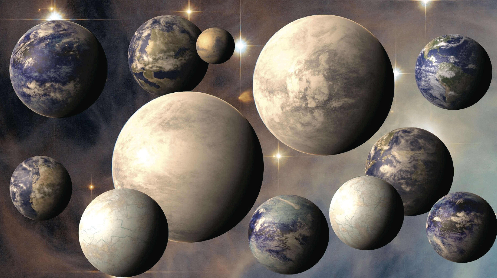

Image Credit: NASA
Mission status
What is TESS?
The Transiting Exoplanet Survey Satellite (TESS) is a NASA-sponsored Astrophysics Explorer-class mission. The TESS mission objective is to search for planets transiting near by stars via an almost all-sky survey. TESS is now coming to the end of its its primary two year mission (started in July 25, 2018). During this time TESS has detected thousands of candidates (as of May 26th 2020). For more information about the TESS mission please visit the NASA TESS homepage
What was the first extension of the TESS mission?
In July of 2020 TESS finished its primary mission and entered into its first extended mission. The first extension lasts until September 2022, and is driven largely by the guest investigator Guest Investigator Program program.
What is the second extension of the TESS mission?
TESS will enter its second extension of the mission in September 2022. Like the first, the second is driven by the Guest Investigator guest investigator program program.
Will there be opportunities for Guest Investigators to propose for short-cadence target observations and/or funding in the second extended mission?
Yes! The GI program is continuing and is a large part of the second extension. The Cycle 5 call was made in November of 2021 and can be found on NSPIRES. Through this call the community can submit proposals for short-cadence target observations, 200 second FFI's, and/or funding.
Where is TESS pointing now?
The current status of the TESS spacecraft can be found at the MIT website.
Where is TESS pointing in its second extended mission?
The observing strategy for Cycle 5 can be found on the second extended mission page and will point in both the northern and southern ecliptic hemispheres.
What are the TESS data products?
Within the primary mission the data products included:
- 2-minute cadence data for a select number of targets.
- 30-minute full frame images.
In the first extended mission the data products available are:
- 20 second cadence data, allotted to ~1000 targets per sector.
- 2-minute cadence data for a select number of targets.
- 10-minute full frame images.
In the second extended mission the data products available are:
- 20 second cadence data.
- 2-minute cadence data for a select number of targets.
- 200-second full frame images.
Can I use TESS data for my own science? Yes! TESS data are made publicly available at the MAST for anyone to use. There is no proprietary period on TESS data.
There are several sites where you can down load TESS data products. The above MAST webpage lists all of these.
How do I convert a TESS magnitude into a flux?
The flux in e/s can be estimated via the following equation:
Flux [e-/s] = 10(20.44-Tmag/2.5)
This is derived from the values presented on page 37 of the instrument hand book.
Can I propose to look at archival data?
Yes! You can propose to use archival data or to perform other TESS-related investigations via the following solicitations:
- Investigations dominated by theoretical effort should respond to the Appendix D.4 Astrophysics Theory Program (ATP) solicitation, or Appendix E.3 the Exoplanet Research Program (XRP).
- Investigations dominated by archival data analysis effort should respond to the Appendix D.2 Astrophysics Data Archive Program (ADAP) solicitation.
- Investigations dominated by ground-based data collection and/or analysis efforts should respond to the Appendix E.3 the Exoplanet Research Program (XRP), or the NSF Astronomy and Astrophysics Research Grants program (AAG).
More information can be found here.
Proposing short-cadence targets
How many TESS 20-second target slots will be available to TESS Guest Investigators?
In Cycle 5 there will be ~2,000 target awarded through the GI program.
How many TESS 2-minute target slots will be available to TESS Guest Investigators?
In Cycle 5 there will be ~8,000 pre-selected targets within the field.
Are there any restrictions on the types of targets that can be proposed through the TESS GI program?
There are not.
What if I can do my science with TESS full frame images, and don't need to propose for short-cadence targets?
Such proposals may request funding only, and will be allowed under the TESS GI program.
What if I have an interesting and timely target that needs to be observed quickly and in short-cadence?
Target of opportunity proposals are solicited for rapidly evolving phenomena whose occurrence is not predictable at the time of the GI proposal deadline. These proposals would commence after the spacecraft upload following the trigger event, which could be as long as 2 months after the event. The impact to science of such a potential delay must be addressed in proposals requesting ToO observations. These proposals may be submitted during the regular cycle and are eligible for funding.
Additionally, a fraction of the GI targets will be reserved for rapid turn-around, Director's Discretionary Time (DDT). If your target can't wait for the next GI proposal cycle, then DDT is the route for you.
Funding opportunities
Will funds be available to support GI proposers?
Yes. TESS Guest Investigators at U.S.-based Institutions may apply for funding to support their TESS Investigations. There are three levels of funding:
- Small proposals ~ $70,000. (per award)
- Large proposals ~ $250,000 (per award)
- Ground-based projects - up to $500,000 (in total for this category)
- Key projects ~ $250,000 (per year)
Will proposals asking for FFI-only data be funded?
Yes! More information can be found here.
Where can I request a no cost extension for my grant?
You can make this request by filling out this form
Data availability
When will TESS data be available from a given sector?
The approximate date of data availability for a given sector can be found on our mission status page.
Will there be any proprietary time period for GI targets?
No. All GI data will become immediately public when it arrives in the TESS archive at MAST.
** Is there a standard acknowledgement to use when publishing TESS data?**
This paper includes data collected by the TESS mission, which are publicly available from the Mikulski Archive for Space Telescopes (MAST). Funding for the TESS mission is provided by NASA's Science Mission directorate.
Data processing
How will TESS GI targets be processed?
TESS data processing takes place at the Science Processing Operation Center (SPOC), designed and operated at NASA Ames Research Center. The SPOC developed the image processing and transit photometry software, leveraging the Kepler Mission's Science Operations Center (SOC) pipeline software. More information on the Kepler software can be found here. Additional information on the science data processing pipeline can be found here.
Note that both the 2-minute cadence and 20-second cadence data will be processed to produce target pixel files and light curves. FFI data will be processed and provided as calibrated images from which light curves can be obtained.
Data analysis
What tools are available to help me prepare my GI proposal?
The GI program Office has made several tools available to assist proposers in developing their observing programs. These proposal tools can be found here.
What tools exist to help me analyze TESS data?
There are a number of tools available for data analysis, developed both by the GI program Office and by the community. These analysis tools can be found here.
I see an interesting feature in my TESS light curve. What could it be?
Some common sources of anomalous light curves features include the target star being on a bad CCD column or scattered light from the Earth and/or Moon. It is recommended that Full-Frame Images taken at the same time as the anomalous feature be checked to verify whether or not the interesting feature seen is astrophysical in nature.
Miscellaneous
How can I get media coverage for my awesome new science result from TESS?
You can request support for your exciting new science result from NASA Goddard's Astrophysics Divisions Communications Team by following the instructions on this webpage. People are encouraged to submit requests for media support 6 weeks before the paper is expected to be published by a journal.
Where can I send my suggestion for an idea I'd like to see incorporated into the TESS GI program, or a software tool I'd like to suggest be developed?
We love feedback! Please contact our helpdesk with any suggestions or questions.